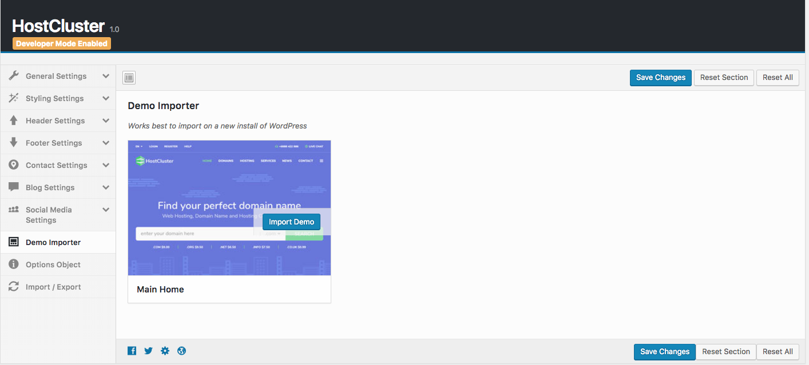
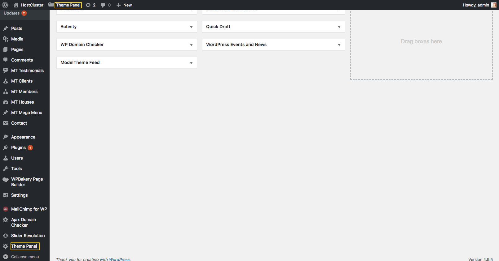
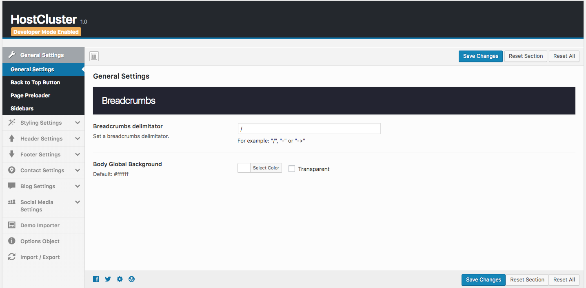
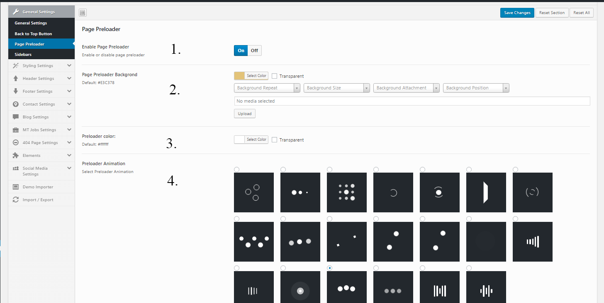
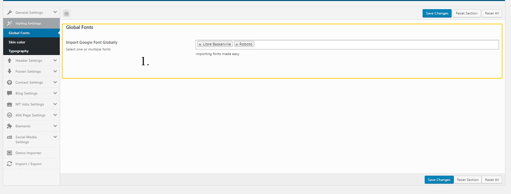
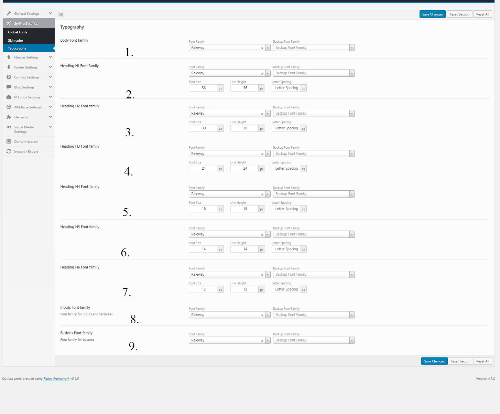
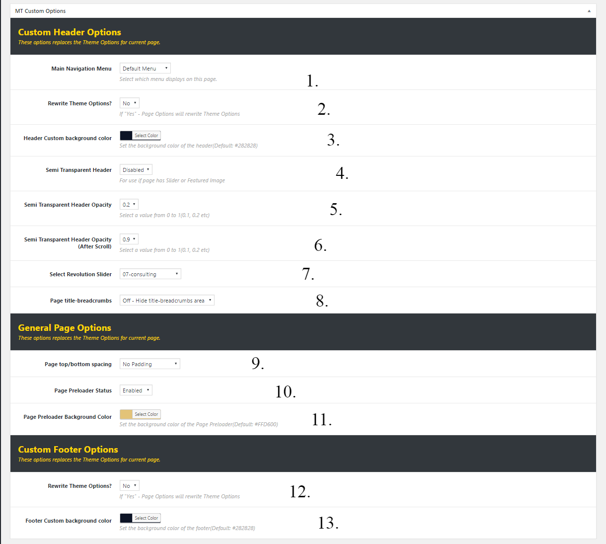
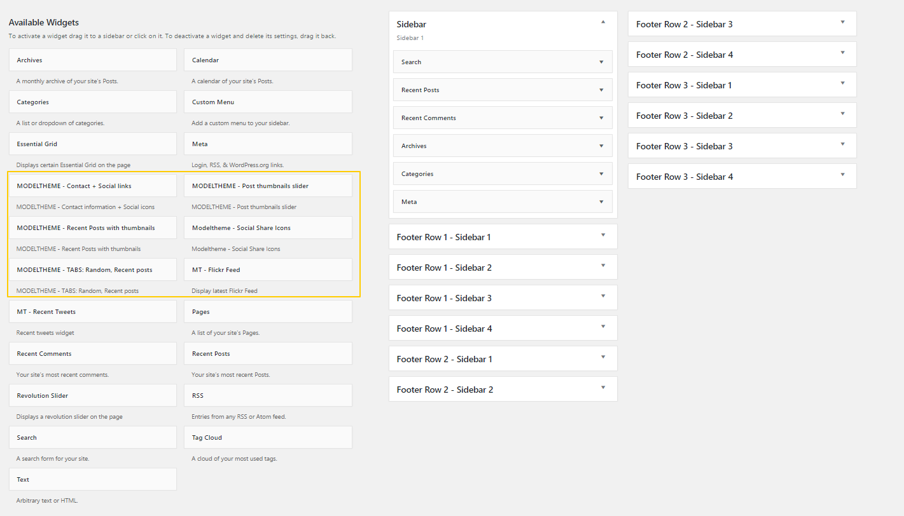
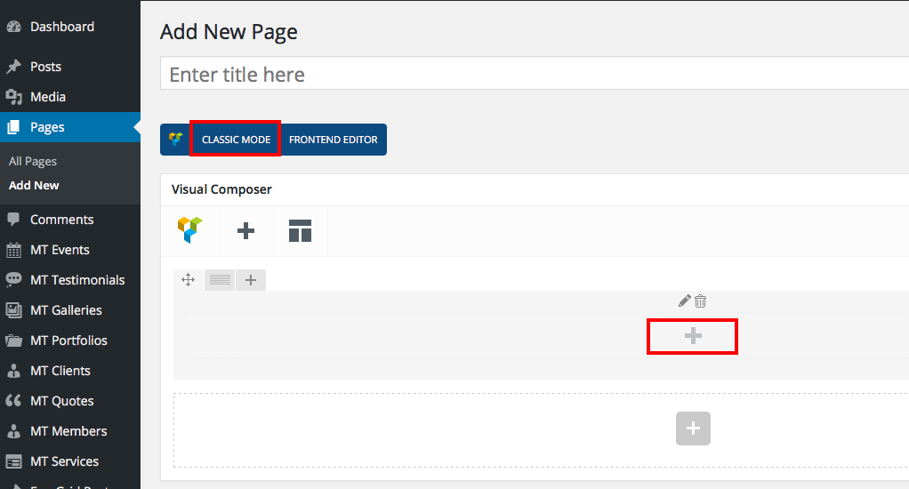
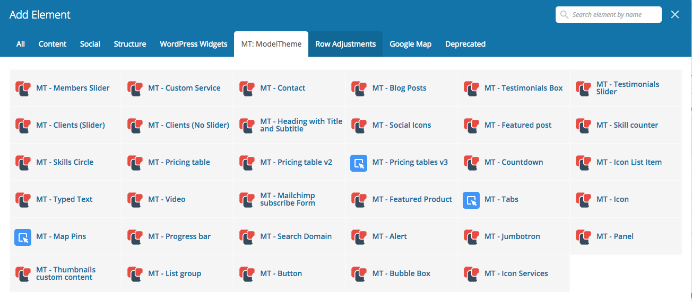

HostCluster - WHMCS Hosting WordPress Theme is a great design idea for hosting companies to start a new website.
HostCluster is a Creative WordPress Theme In line with modern design, color fresh and dynamic. Creative Layout and Smart. Super Clear and Clean Layout! This is a great choice!
Thank you for purchasing our template!
Some features of the Theme
One Click Demo Install
Easy Installation & Setup
Fully Customizable Options
Retina Ready For Enabled Devices
Custom Backgrounds Per Page/Post
Multiple Colors & Skins Throughout
Powerful Customization Options
Font, Icons Instead of Images
Eye-catching CSS3 Animations
Well documented
Constant Updates & New Features
Incredible Shortcode Options
MT Jobs
MT Events
MT Testimonials
MT Galleries
MT Portfolios
MT Clients
MT Members
MT Services
MT Mega Menu
Multiple Headers
Multiple Footers Variants
Footers on multiple ROWS (NEW)
Page Preloader with multiple animations
Advanced Typography Options
Unlimited Sidebar Creation
Multiple Custom Widgets
Fully Optimized For Speed
Visual Composer Included
Revolution Slider Included
Compatible with Contact Form 7
Compatible with Disquis Comment sistem
Powerful Theme options panel
30+ custom shortcodes
10+ custom widgets
Custom Menu Per Page/Post
Back to Top button
Unlimited Sidebars
Custom, editable 404 Page (NEW)
Premium dedicated support included;
Install WordPress
1. Download and unzip the WordPress package if you haven't already.
2. Create a database for WordPress on your web server, as well as a MySQL (or MariaDB) user who has all privileges for accessing and modifying it.
3. (Optional) Find and rename wp-config-sample.php to wp-config.php, then edit the file (see Editing wp-config.php) and add your database information.
4. Upload the WordPress files to the desired location on your web server:
If you want to integrate WordPress into the root of your domain (e.g. http://example.com/), move or upload all contents of the unzipped WordPress directory (excluding the WordPress directory itself) into the root directory of your web server.
If you want to have your WordPress installation in its own subdirectory on your website (e.g. http://example.com/blog/), create the blog directory on your server and upload the contents of the unzipped WordPress package to the directory via FTP.
Note: If your FTP client has an option to convert file names to lower case, make sure it's disabled.
5. Run the WordPress installation script by accessing the URL in a web browser. This should be the URL where you uploaded the WordPress files.
If you installed WordPress in the root directory, you should visit: http://example.com/
If you installed WordPress in its own subdirectory called blog, for example, you should visit: http://example.com/blog/
The first option on how to install this Theme would be to directly upload the hostcluster.zip file via WordPress Theme Uploader.
>Log into your WordPress dashboard
>Navigate to Appearance > Themes
>Click Install Themes
>Click Upload
>Now you just need to find the "hostcluster.zip" file in the Upload folder and hit Install now.
If you are experiencing any issues during the installation I would recommend to check out this Screencast by Envato
Theme Installation via FTP
The second option on how to install our Theme would be the upload via FTP manager. It really doesn't matter which of the two ways you choose, just choose the one you feel more comfortable with.
1. Login to your FTP account and navigate to your WordPress Installation directory
2. Navigate to the folder /wp-content/themes/
3. Upload the "HostCluster" folder (not the .zip-file). This is the folder located inside the "Upload" folder in the zip-file you've downloaded from Themeforest.
4. Now log into your WordPress backend
5. Navigate to Appearance > Themes
6. Find the Theme and click Activate
If you are experiencing any issues during the installation I would recommend to check out this Screencast by Envato
Install & Setup Plugins
So at this stage you have probably noticed a warning, asking you to install recommended plugins. This is needed to get the Theme Panel plugin and a few other plugins for the theme to work perfectly. Installing that is very simple, you just need to click Begin installing plugins and you will be redirected to the plugin installation page where you can install any Plugin you want or you need.
Import Demo Data - One-Click-Install
This theme comes with an amazing built-in feature: One-Click-Install -> Possibility to import demo data of the theme with one click only, and make your site look 1:1 with our demo.
Sounds cool? How can I install the demo?
Go to your WordPress Admin Panel -> HostCluster Theme Options Panel -> Demo Importer

Importing Revolution Slider Demo
Demo-sliders are located into the downloaded package from themeforest in /sampledata/Dummy_Revolution_Sliders/
Slider name: 01_main_slider.zip
(*) - The sliders are automatically imported when the Demo Importer is fired. After completing the import the site will contain all demo data + revolution sliders
Theme Options Panel
If you want to change the general Options of the Theme, go to your WordPress Admin Dashboard Area to HostCluster Theme Panel. Here you have a tabbed Navigation where you can change a lot of Options of your new Theme:
General Settings
Page Preloader
Sidebars
Styling Settings
Global Fonts
Skin colors
Typography
Header Settings
Header - General
Logo & Favicon
Header - Top Small
Header - Main Big
Fixed Sidebar Menu
Footer Settings
Footer Top Rows
Footer Bottom Bar
Contact Settings
Contact
Mailchimp
Blog Settings
Blog Archive
Author Archive
Categorie Archive
Tags Archive
Search Archive
Single Post
404 Page Settings
Social Media Settings
Demo Importer
Import / Export


Feature: Page Preloader
Option Type: Theme Panel Option - To access this option and add new custom css to your website go to Theme Options Panel(General Settings Tab) 
1. Enable Page Preloader - Disable or Enable the preloader on all over the site;
2. Page Preloader Background - Backgrond color of the preloader(not the animation);
3. Preloader color - Animation color of the preloader;
4. Preloader Animation - Our theme comes with 20x default preloader animations;
Feature: Google Fonts
Option Type: Theme Panel Option - To access this option and add new custom css to your website go to Theme Options Panel(Styling Settings Tab) 
1. Why use this tool?
Posibility to add unlimited Fonts to your website;
Option Type: Theme Panel Option - To access this option and add new custom css to your website go to Theme Options Panel(Styling Settings Tab) 
1. Body Font family - Change the main font family from the site(Will be applied to all elements from the site which don't have a font-family css rule applied);
2. Heading H1 Font family - Change the font family, font-size, line-height and letter spacing of Heading H1;
3. Heading H2 Font family - Change the font family, font-size, line-height and letter spacing of Heading H2;
4. Heading H3 Font family - Change the font family, font-size, line-height and letter spacing of Heading H3;
5. Heading H4 Font family - Change the font family, font-size, line-height and letter spacing of Heading H4;
6. Heading H5 Font family - Change the font family, font-size, line-height and letter spacing of Heading H5;
7. Heading H6 Font family - Change the font family, font-size, line-height and letter spacing of Heading H6;
8. Inputs Font family - Set the font family for inputs and textareas;
9. Buttons Font family - Set the font family for buttons;
Option Type: Page/Post Metaboxes(not theme panel options) - To deal with these options, when editing a post/page you will get a set of options as follows: 
Custom Header Options
1. Main Navigation Menu - Replaces the default Nav Menu from current the page/post;
2. Rewrite Theme Options? - Rewrite the options from the theme options panel (Default OFF - get theme options);
3. Header Custom background color? - Set a custom background color for Header on the current post/page;
4. Semi Transparent Header? - Activate the background of the header to semi transparent (The next 2 options can be used only with this option Enabled);
5. Semi Transparent Header Opacity - Set the background opacity of the header;
6. Semi Transparent Header Opacity (After Scroll) - Set the background opacity of the header after scroll (works when fixed header is active);
7. Select Revolution Slider - Adds a desired revolution slider on the top of the page;
1. Page top/bottom spacing - Choose between next options:
High Padding - Adds a 80 pixells on top-bottom sides of the main page div;
No Padding - Removes all padding from main page div;
No Padding top - Adds a 80 pixells on top sides of the main page div;
No Padding bottom - Adds a 80 pixells on bottom sides of the main page div;
2. Page Preloader Status - Enable or Disable the preloader on current page/post;
3. Page Preloader Background Color - Set a custom background color to page preloader;
Custom Footer Options
1. Rewrite Theme Options - Rewrite Theme Options with current page/post options;
1.a. If YES - These options will appear:
Footer Row #1 - Status - Enables the first row of widgets;
Footer Row #2 - Status - Enables the second row of widgets;
Footer Row #3 - Status - Enables the third row of widgets;
2. Footer Custom background color - Set a custom background color to footer;
MT Widgets
HostCluster Theme comes with a lot of custom widgets which can be found in your WordPress Admin Area under Appearance > Widgets.
MT - Flickr Feed
MT - Post thumbnails slider
MT - Recent Posts with thumbnails
MT - Recent Tweets
MT - Social icons widget
MT - TABS: Random, Recent posts
MT - Testimonials slider

MT Shortcodes
HostCluster comes with VISUAL COMPOSER Plugin included, so any customer of the theme can use this amazing drag and drop page builder.

Besides default Visual Composer shortcodes, HostCluster comes with +30 custom shortcodes.
HostCluster comes a huge list of shortcodes integrated directly into Visual Composer Plugin
MT - Portfolio
MT - Members Slider
MT - Members Fancy Slider
MT - Service
MT - Service Slider
MT - Contact Details
MT - Contact
MT - Blog Post
MT - Google Map
MT - Tweets Slider
MT - Perspective Mockup Slider
MT - Events Timeline
MT - About
MT - Testimonials Box
MT - Testimonials Slider
MT - Clients
MT - Heading with Title and Subtitle
MT - Social Icons
MT - Services Features
MT - Featured Post
MT - Skill Counter
MT - Pricing Table
MT - CountDown
MT - Mailchimp subscribe form
MT - Icon List Item
MT - Alert
MT - Jumbotron
MT - Panel
MT - Thumbnails custom content
MT - List Group
MT - Button

Questions
For more FAQ articles, check our online documentation here.
If you want to send us a message with an issue or a questions, you can reach us at Ticksy to submit a ticket.
Support
You get free 6 month support with this item. If you need some help or found a bug or issue with the template, you can always contact us here via email and we will respond to you within 1 day.